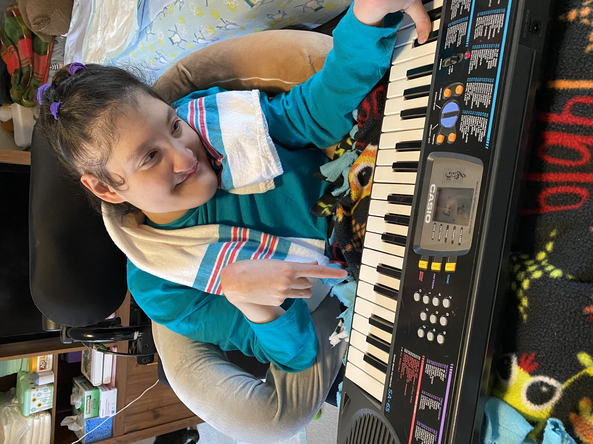
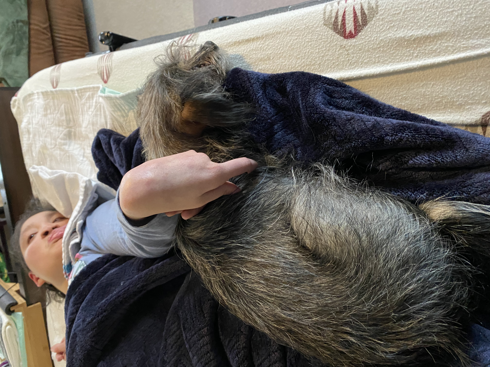

Kristin Li Donnellan
Hobbies/Interests

One of Kristin's favorite hobbies is playing the electric piano. She loves the sounds that can be made just from one touch of a finger. Kristin also uses the piano during Music Therapy.
Kristin loves animals, especially her own dogs. Benny, the newest addition to our family, is about 2.5 years old now, but joined the family just before the pandemic started. Kristin has always loved to have dogs hanging out with her.
